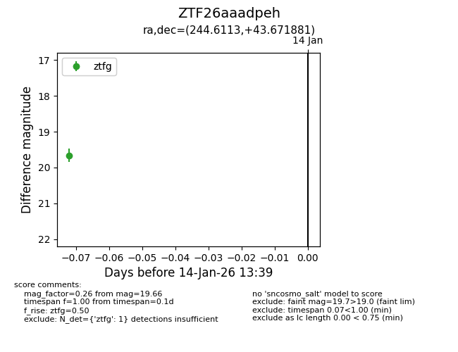
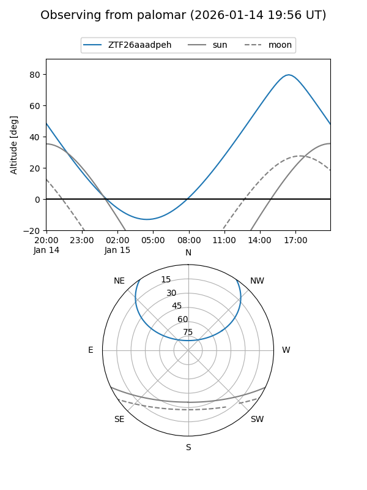

ZTF26aaadpeh
Target ZTF26aaadpeh at 2026-01-14 13:40
Aliases and brokers:
FINK: link
Lasair: link
ALeRCE: link
alt names
ZTF26aaadpeh (ztf,fink_ztf)
Coordinates:
equatorial (ra, dec) = 244.6113,+43.67188
equatorial (HMS+DMS) = 16:18:26.72,+43:40:18.77
galactic (l, b) = (68.7783,+45.51098)
Flags:
Photometry:
last ztfg=19.66
1 ztfg detections
Lightcurve

Visibility


Additional plots